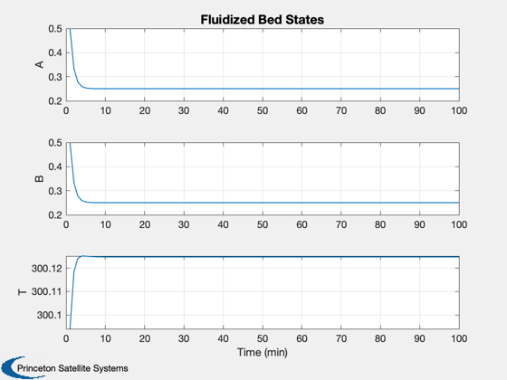

Fluidized Bed Simulation
Simulates a fluidized bed reactor - demonstrates model predictive control
------------------------------------------------------------------------- Reference: Henson, M. A. and D. E. Seborg. (1997.) Nonlinear Process Control, Prentice-Hall. p. 244. ------------------------------------------------------------------------- See also: RHSFluidizedBed, TimeGUI, Plot2D -------------------------------------------------------------------------
Contents
%-------------------------------------------------------------------------- % Copyright (c) 2013 Princeton Satellite Systems, Inc. % All rights reserved. %-------------------------------------------------------------------------- % Since version 1. %--------------------------------------------------------------------------
Model parameters
-----------------
clear d d.lEA = 1.0; % Lewis number d.lEB = 1.0; % Lewis number d.betaHat = 1.0; % Residence time d.beta1 = 0.25; % Heat of reaction d.beta2 = 0.25; % Heat of reaction d.gamma1 = 1.0; % Activation energy d.gamma2 = 1.0; % Activation energy d.alpha1 = 1.0; % Rate constant factor d.alpha2 = 1.0; % Rate constant factor d.xAF = 0.5; % Concentration of A in the feed stream d.xBF = 0.5; % Concentration of B in the feed stream d.tF = 300; % Temperature in feed stream d.u = 0; % Control
State
[concentration of A; concentration of B; temperature]
%---------------------
x = [1;1;300];
t = 0;
The control sampling period and the simulation integration time step
---------------------------------------------------------------------
dT = 1;
Number of sim steps
--------------------
nSim = 100; tEnd = nSim*dT;
Plotting arrays
----------------
tPlot = zeros(1,nSim); xPlot = zeros(3,nSim);
Run the simulation
See RHSFluidizedBed.m which gives a model of a fluidized bed. -------------------------------------------------------------
for k = 1:nSim x = RK4( 'RHSFluidizedBed', x, dT, t, d ); t = t + dT; tPlot(k) = t; xPlot(:,k) = x; end
Plot results
Open loop response is shown below. ----------------------------------
j = 1:k; Plot2D( tPlot, xPlot,'Time (min)',['A';'B';'T'], 'Fluidized Bed States') %-------------------------------------- % $Date$ % $Id: 5fc98bdd663afd5390c02638ba4c4febbb53a219 $